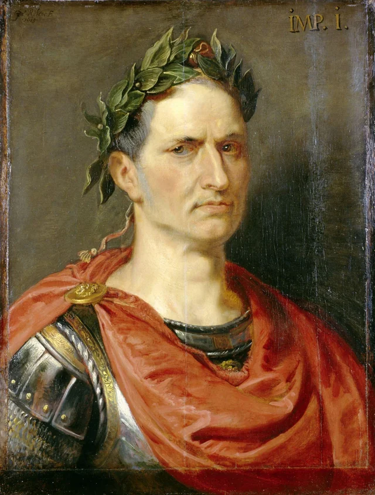
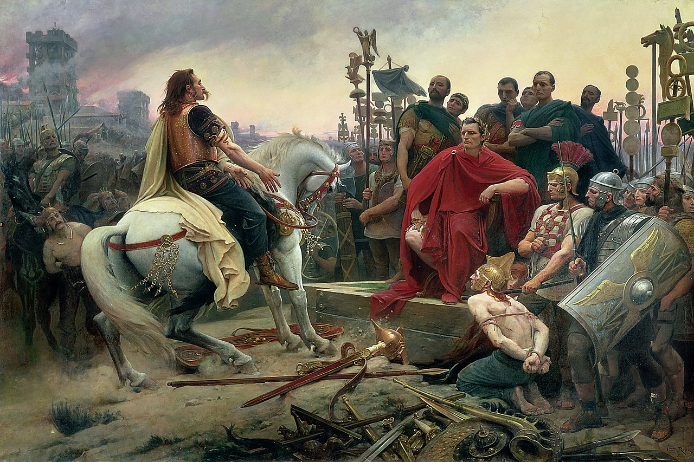

Romos žymiausias diktatorius

Gajus Julijus Cezaris (lot. Gaius Julius Caesar) – Romos valstybės veikėjas, vienas dižiausių ir geriausių karvedžių istorijoje, gana nuobodus rašytojas, kilęs iš patricijų Julijų giminės ir vienas iš žymiausių romėnų istorijoje.
Gyvenimas ir pasiekimai
Gimęs 100 m. pr. Kr. liepos 13 d. Julijaus Cezario ankstyvas gyvenimas yra gana nesvarbus. Jo svarba istorijai prasideda kai jam jau buvo suėję 40 m., kai jis buvo išrinktas Romos konsolu (vienu iš dviejų valstybės vadovų, kurie turėjo 1 m. terminą valdžioje) ir su Pompėjumi (dar vienu didingu Romos generolu) bei Krasu (turtingiausiu žmogumi Romoje) sudarė I triumviratą (politinę koaliciją). Būdamas konsolu Cezaris įvykdė daug reformų, daugiausia kurių padėjo jo politiniams sąjungininkams ir valstiečiams, o ne turtingiesiems ir politiškai galingiems. Šie Cezario priešininkai, pasibaigus konsolo terminui, paskyrė Cezarį pietų Gaulo gubernatoiumi, siekdami panaikinti jo politinę įtaką.
Tuo tarpu Cezaris per kitus 8 metus (nuo 58-50 m. p. Kr.) užkariavo Gaulo regioną (šiandienos Prancūziją ir žemes iki Reino upės), išplėčiant Romos teritoriją ir turtus bei subūriant 60000 legionierių stiprią, patyrusią ir asmeniškai Cezariui ištikimą kariuomenę. Cezario karai Gaule taptų propagandos dalis, aukštinanti Cezarį ir pabrėžiant jo didybę.
Po sėkmingų Galijos karų Julijus Cezaris tapo vienu galingiausių žmonių Romoje. Tačiau jo iškilimas kėlė grėsmę tradicinei senatoriškai respublikai, kuri grindėsi galių pasidalijimu ir kolegialia valdžia. Senatas, bijodamas Cezario įtakos, pareikalavo, kad jis atsisakytų savo kariuomenės ir sugrįžtų į Romą kaip privatus asmuo, tuo tarpu Cezaris nusprendė įžygiuoti į Romos miestą su 60000 karių peržengiant Rubikono upę - atvirą sukilimo prieš senatą parodymą. Po trumpo pilietinio karo prieš senatą ir jo rėmėjus, kurio metu Cezaris nukeliavo į Egiptą, padėjo Kleopatrai užimti valdžią, turėjo vaiką su ja ir netyčia sudegino Aleksandros didžiają biblioteką, Cezaris paskelbė save diktatoriumi, sucentralizuojant visą valdžią savo rankose.

Po 4 metų Cezario valdžios 44 m. pr. Kr. kovo 15 d., kelios dienos prieš iškeliaujant kariauti prieš dacus ir persus, Gajus Julijus Cezaris buvo nužudytas senato rūmuose savo priešininkų, kurių didžioji dalis gavo Cezario amnestiją po pilietinio karo. Cezario mirtis sukeltų dar kelis pilietinius karus tarp Cezario įvaikinto sūnėno
Augustino, Marko Antonijaus ir Cezario žudikų.
Cezario palikimas
Šiais laikais Gajus Julijus Cezaris yra prisimenamas ne tik kaip vienas iš žymiausių romėnų, bet kaip ir vienas iš žymiausių asmenų istorijoje. Jo poveikis istorijai yra masiškas - sukuriant Romos imperijos pagrindą, dėl kurio net ir po Vakarų Romos žlugimo daugiausia Europos monarchų titulų kilo iš Cezario vardo (Rusų - Caras, Vokiečių - Kaiseris, Osmanų - Kayser-i Rûm...).